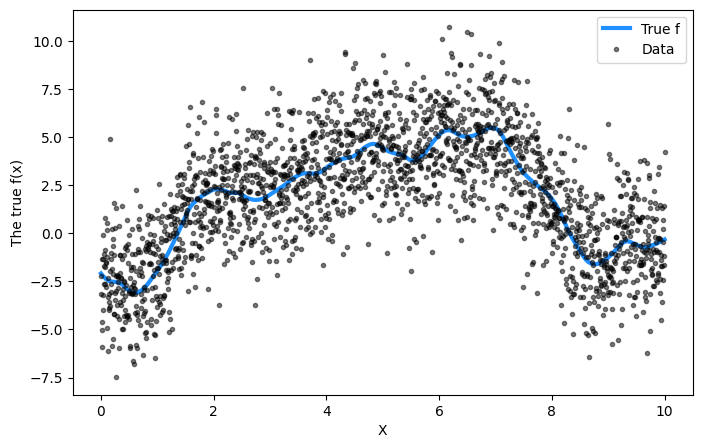
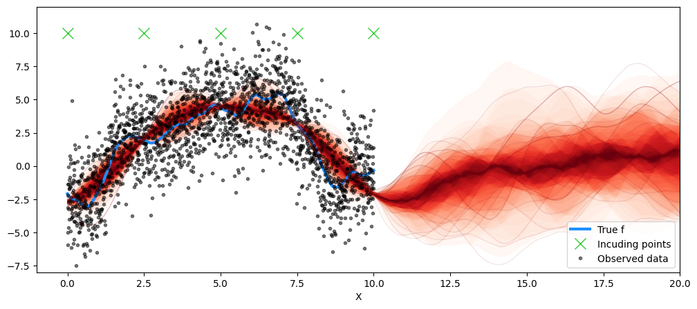
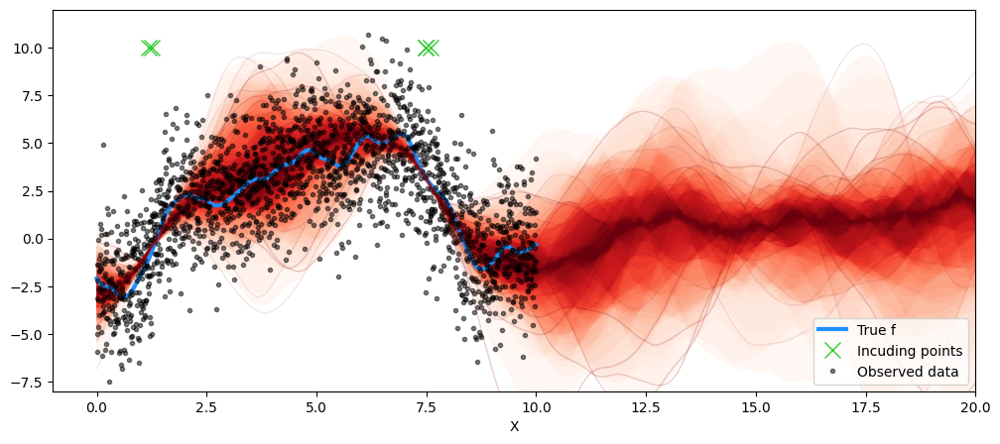

Code
import pymc as pm
import matplotlib.pyplot as plt
import arviz as az
import numpy as np
from scipy.stats import multivariate_normal
from pymc.gp.util import plot_gp_distThis rather brief note outlines the differences between two important sparse Gaussian process approximation methods. Following the lecture slides, we will focus on the Deterministic Training Conditional (DTC) method and the Fully Independent Training Conditional (FITC) method. These are both examples of inducing point methods. Following our discussion of Candela & Rasmussen in Lecture, it is worth emphasizing that both these methods can be expressed in terms of amendments to the joint (training and predictive) Gaussian process prior.
DTC assumes that the posterior distribution of the Gaussian Process, when conditioned on the inducing points, is independent of the training data, i.e., there is conditional independence between them. It uses this to derive a closed-form (only when the likelihood is Gaussian too) expression for the approximate posterior. DTC is relatively simple to implement and is computationally efficient. Consider the pseudo-code below that contrasts the standard Gaussian process formalism with the DTC approach for building the conditional distribution.
# Standard formalism
Kxx = kern(X,X)
Kxs = kern(X, Xnew)
Kss = kern(Xnew, Xnew)
Sigma = sigma**2 * eye(N)
L = cholesky(Kxx + Sigma)
A = solve_lower(L, Kxs)
v = solve_lower(L, y)
mu = A.T @ v
cov = Kss - A.T @ A # DTC approach
Kuu = kern(Xu, Xu)
Kuf = kern(Xu, X)
Kss = kern(Xnew, Xnew)
Luu = cholesky(Kuu)
A = solve_lower(Luu, Kuf)
Qffd = sum(A**2, 0)
Lambda = sigma**2 * eye(Qffd.shape[0])
A_l = A / Lambda
As = solve_lower(Luu, Kus)
L_B = cholesky(eye(Xu.shape[0]) + A_l @ A.T)
mu = As.T @ solve_upper(L_B.T, c)
cov = Kss - As.T @ As + C.T @ COne weakness associated with DTC is that its independence assumption can lead to overconfident predictions, particularly when away from the incuding points.
Like DTC, FITC also assumes conditional independence between the GP values at the inducing points and the remaining training data. However, it doesn’t completely neglect the correlations; it introduces a diagonal correction term to approximate the covariance matrix. In pseudocode, the amendment to DTC is given below
Kffd = ker(X, X, diag=True) # only the diagonal terms
Lambda = Kffd - Qffd + sigma**2
It should be clear that even with FITC, there will be accuracy limitations when compared with a standard Gaussian process model.
In the code blocks below, we demonstrate using DTC and FITC with pymc. To swamp between the two, simply change this line of code:
gp = pm.gp.MarginalApprox(cov_func=cov, approx='DTC')
# Training data
n = 2000
X = np.linspace(0, 10, n)[:, None]
np.random.seed(100)
# Define the true covariance function and its parameters
ell_true = 1.0
eta_true = 3.0
cov_func = eta_true**2 * pm.gp.cov.Matern52(1, ell_true)
mean_func = pm.gp.mean.Zero()
f_true = np.random.multivariate_normal(
mean_func(X).eval(), cov_func(X).eval() + 1e-8 * np.eye(n), 1
).flatten()
sigma_true = 2.0
# True signal is corrupted by random noise
y = f_true + sigma_true * np.random.randn(n)
## Plot the data and the unobserved latent function
fig = plt.figure(figsize=(8, 5))
ax = fig.gca()
ax.plot(X, f_true, "dodgerblue", lw=3, label="True f")
ax.plot(X, y, "ok", ms=3, alpha=0.5, label="Data")
ax.set_xlabel("X")
ax.set_ylabel("The true f(x)")
plt.legend();
We shall use a Matern52 kernel that is parameterized by
\[ k(x, x') = \eta^2 \left(1 + \frac{\sqrt{5(x - x')^2}}{\ell} + \frac{5(x-x')^2}{3\ell^2}\right) \mathrm{exp}\left[ - \frac{\sqrt{5(x - x')^2}}{\ell} \right] \]
where the hyperparameters are \(\eta\) and \(\ell\). Additionally, we will assume that the data noise is given by a Half Cauchy distribution with shape parameter \(\sigma\). For hyperparameter inference, we shall utilize MAP.
with pm.Model() as model:
ell = pm.Gamma("ell", alpha=2, beta=1)
eta = pm.HalfCauchy("eta", beta=5)
cov = eta**2 * pm.gp.cov.Matern52(1, ell)
gp = pm.gp.MarginalApprox(cov_func=cov, approx='DTC')
# Fixed inducing points!
Xu = np.linspace(0, 10, 5).reshape(5,1)
sigma = pm.HalfCauchy("sigma", beta=5)
y_ = gp.marginal_likelihood("y", X=X, y=y, Xu=Xu , sigma=sigma)
with model:
map_post = pm.find_MAP()Now let’s plot the posterior predictive distribution!
post_map_dist = multivariate_normal(mu, covar)
map_samples = post_map_dist.rvs(50)
Xu_final = Xu
fig = plt.figure(figsize=(12, 5))
ax = fig.gca()
plt.plot(X, f_true, "dodgerblue", lw=3, label="True f")
plt.plot(Xu_final, Xu_final*0 + 10, 'x', ms=12, color='limegreen', label='Incuding points')
plt.plot(X, y, "ok", ms=3, alpha=0.5, label="Observed data")
plot_gp_dist(ax, samples=map_samples, x=X_new )
plt.legend(loc='lower right')
plt.xlabel("X")
plt.xlim([-1, 20])
plt.ylim([-8, 12])
plt.savefig('fixed.png', dpi=150, bbox_inches='tight', transparent=True)
plt.show()
We shall repeat the same exercise, but now assign a flat prior to the inducing point locations and let those be optimized as well.
with pm.Model() as model:
ell = pm.Gamma("ell", alpha=2, beta=1)
eta = pm.HalfCauchy("eta", beta=5)
cov = eta**2 * pm.gp.cov.Matern52(1, ell)
gp = pm.gp.MarginalApprox(cov_func=cov, approx='DTC')
# Fixed inducing points!
Xu_init = np.linspace(0, 10, 5).reshape(5,1)
# Varying inducing points!
Xu = pm.Flat("Xu_i", initval=Xu_init, shape=(5,1))
sigma = pm.HalfCauchy("sigma", beta=5)
y_ = gp.marginal_likelihood("y", X=X, y=y, Xu=Xu , sigma=sigma)
with model:
map_post = pm.find_MAP()
with model:
mu, covar = gp.predict(X_new, point=map_post, diag=False)post_map_dist = multivariate_normal(mu, covar)
map_samples = post_map_dist.rvs(50)
Xu_final = map_post['Xu_i']
fig = plt.figure(figsize=(12, 5))
ax = fig.gca()
plt.plot(X, f_true, "dodgerblue", lw=3, label="True f")
plt.plot(Xu_final, Xu_final*0 + 10, 'x', ms=12, color='limegreen', label='Incuding points')
plt.plot(X, y, "ok", ms=3, alpha=0.5, label="Observed data")
plot_gp_dist(ax, samples=map_samples, x=X_new )
plt.legend(loc='lower right')
plt.xlabel("X")
plt.xlim([-1, 20])
plt.ylim([-8, 12])
plt.savefig('opt.png', dpi=150, bbox_inches='tight', transparent=True)
plt.show()
In the example above, we note a considerable degree of clustering in the inducing point locations. This is not unnatural. Inducing points are meant to act as a summary of the dataset, and the optimization process aims to place them in regions where either there is less data or where there is significant variation in the function values. Note that in the case above, it happens to be where the function is rapidly changing.